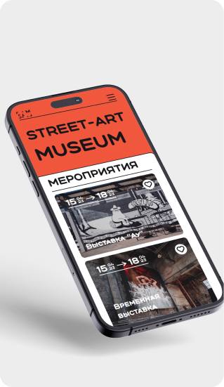
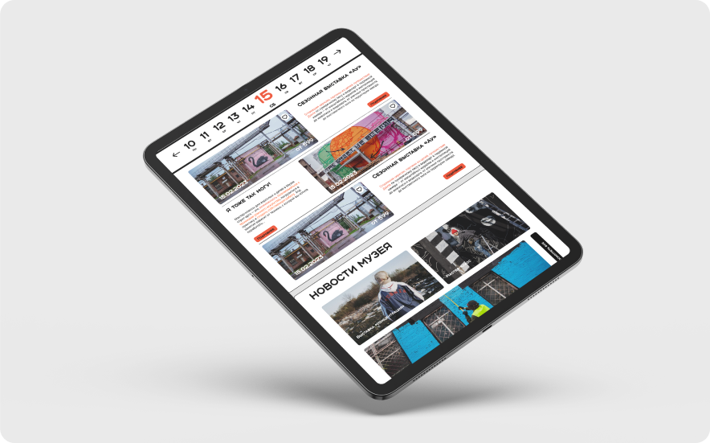
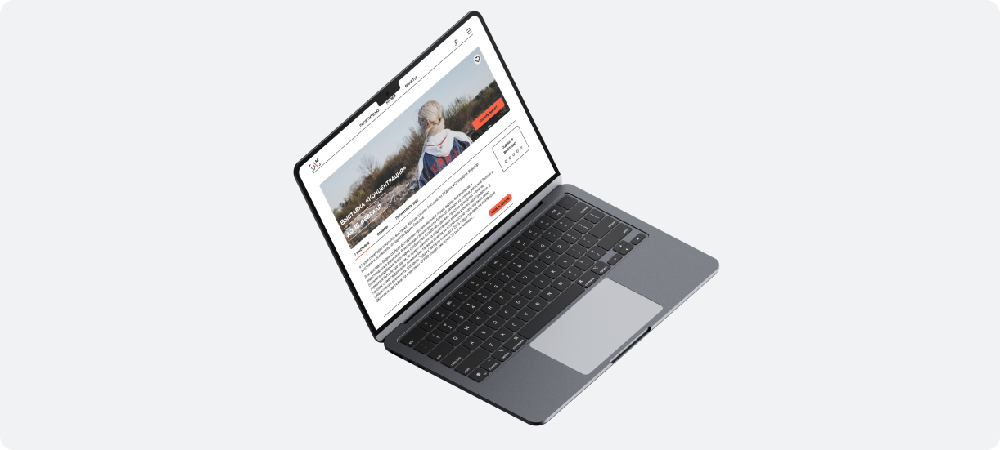

Сайт SAM
Задание, в котором нужно было сделать редизайн для сайта sam (street atr museum)
В рамказ этого задания было разработано пять страниц : о нас, новости музея;
о музее; шаблон для выставок; мероприятия музея.



